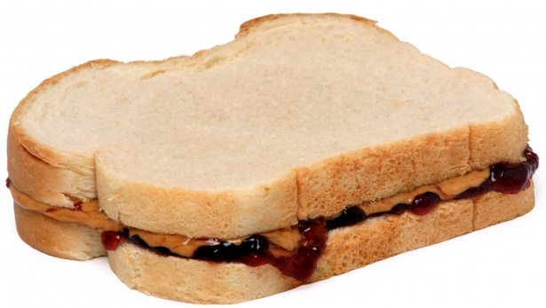

PB&J Sandwich Recipe

Here's how you learn how to make a simple PB&J Sandwich. If you wanna make
it a bit more tasty, follow the optional steps, if you'd like.
Ingredients
- 2 slices of bread
-
Peanut Butter
- Wowbutter (IF ALLERGIC TO PEANUTS)
- Jelly (Grape Jelly)
Instructions
- Lay out two slices of bread.
- Spread peanut butter or wowbutter on one slice.
- Spread jelly on the other slice.
- Put the two slices together.
Additional comments/stuff
- If you're allergic to peanuts, use Wowbutter as an alternative.
-
If you would like to, add some different stuff like Nutella. Trust me,
it's really good!
Optional Ingredients
- Banana Slices
- Nutella
- Butter
Optional Instructions (You don't have to follow these in order, except the
cooking part.)
-
Grab a banana, and slice it until there's about more than 7 slices.
-
When you're done applying the peanut butter or wowbutter and jelly to
the bread slices, apply banana slices to the bread slices.
- Apply Nutella to one side or both sides of the bread.
- Apply butter to the top parts of the bread slices.
- Use a pan, put it on the stove, and turn it to about medium heat.
-
Put one side of the sandwich on the pan until it turns golden brown.
Flip the sandwich to its' other side and do the same step.